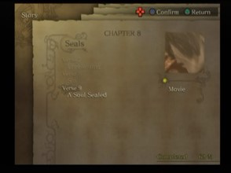
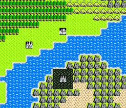
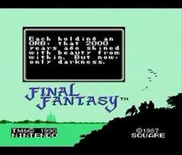
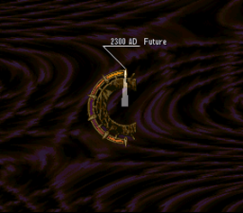
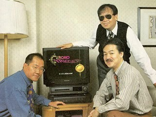

Finality Games
CHRONO TRIGGER
The Chrono Trigger Review
Written by Demi on October 12th 2021
 Out of every game I could’ve made my first to finish this year I think this was the best choice, I started Chrono Trigger in the winter around the time I was finishing Drakengard which inspired me to pick up Chrono Trigger again because Drakengard’s multiple endings reminded me of the multiple endings Chrono Trigger is famous for. Yoko Taro will be here a bit later, but this comparison was on my mind for a bit especially when I read that Yoko Taro talked about wanting to differentiate Drakengard from Final Fantasy and Dragon Quest.
I also replayed this game (with a fresh new save file) because I was seeing a few of my friends playing through Chrono Cross and even had that game and Radical Dreamers on my radar way back when I was just that kid that listened to way too many video game soundtracks. I still need to play Chrono Cross and it’s something I’m certainly going to be playing next year. I heard Chrono Cross is pretty similar to some of Yoko Taro’s games when it comes to the writing so maybe this won’t be the last time I bring up his name with the Chrono series in a tangential way.
The last time I finished Chrono Trigger was back in the summer where I was going into high school for the first time, I finished Earthbound on the Wii U before that and I was realizing that JRPGs were something that I cared about enough to invest some time into finishing a game instead of just playing them for a bit and then moving on (although this habit still hasn’t gone away entirely, yet). Since that time, I finished games such as Final Fantasy VI and Dragon Quest VI which are two games that were directly impacted by Chrono Trigger and even then I saw ripples of influence Chrono Trigger had on games I played outside of those two games that just so happened to release around the time Chrono Trigger was being developed/released.
We can’t even really talk about this game without examining what Square and Enix were at this time, they were making JRPGs that were in some ways very similar but structurally by the time they were coming together to make Chrono Trigger, they were further apart than ever in their own ways.
Yuji Horii got his start by making an adventure game series focused on utilizing an incredibly simplistic menu system that would be used in Dragon Quest, and that sort of philosophy is something I feel differs Dragon Quest from Final Fantasy as a whole, the focus on roleplay with these menu systems and interfaces instead of putting all the chips on the immediate cinematic elements. Well I typed all this out, and then remembered/researched that Horii said he wanted to make a game like Ultima and Wizardry but for a wider audience so there you go, Dragon Quest was born from a desire to make the hardcore adventure something that could be filed down to a size that kids and casual game fans could enjoy instead of people that, actually liked math I don’t know.
Dragon Quest games built themselves upward to bigger adventures; to where Dragon Quest VII became a game that’s about being sucked in a 100-hour adventure that feels like you’re in your own little anime D&D game with scenarios and small changes over time (pun intended). Dragon Quest VII is a game that’s also about time traveling and it feels about as much of a Dragon Quest version of Chrono Trigger as Dragon Quest VI was. Yuji Horii being the scenario and game designer and these games being structured in such a similar way makes this apparent.
 As someone who grew up playing Dragon Quest IX and Final Fantasy 3 on the DS almost back-to-back along with the occasional startup of FF1, I could see that the two games were different in a few major ways from the moment you hear the theme of Final Fantasy. Dragon Quest had a focus on exploration, in the first game you can see the final dungeon right when you step outside of the first town you’re in, so you already know and feel where to start working towards and while the goal post would not be as apparent in later games Dragon Quest still prides itself on this sort of simplicity.
 Final Fantasy 1 gives you this exact same feeling as Dragon Quest in the first couple of hours by starting you on an island to fight some loser in a castle to prove that you have some sort of fate you just signed yourself up for by starting up the game. After defeating the weirdo in the castle, you see that there’s a bit more of a mystery going on with Final Fantasy 1 though compared to Dragon Quest and while it’s not THAT different when looking at the first game, this is something that stacks up over time when the game starts delving into the fate of your group of cardboard cutouts of whatever Final Fantasy classes you picked and how time is going to play a role in the whole story.
 Chrono Trigger is a game that prides itself with being an adventure grounded in the trail of mystery that
Final Fantasy games had with their plot progression and the simplified goal setting of Dragon Quest. You
have characters with their own story going on, but they’re brought along together by this one goal even
when plucked from their own time periods that feel like separate games in of themselves. Even a certain
optional side character has a side to him that makes the player consider letting him join even after all
he has done in the game instead of just fighting him like another JRPG boss, which is vaguely reminiscent
of Dragon Quest 1 letting you join the main villain right at the end if you want to pull a weird comparison.
The game itself starts off by letting you play around and get used to the mechanics of the game before making
you realize that there was always some sort of fate destined to happen with every minor action (or bag of food) you take.
Chrono Trigger is a game that prides itself with being an adventure grounded in the trail of mystery that
Final Fantasy games had with their plot progression and the simplified goal setting of Dragon Quest. You
have characters with their own story going on, but they’re brought along together by this one goal even
when plucked from their own time periods that feel like separate games in of themselves. Even a certain
optional side character has a side to him that makes the player consider letting him join even after all
he has done in the game instead of just fighting him like another JRPG boss, which is vaguely reminiscent
of Dragon Quest 1 letting you join the main villain right at the end if you want to pull a weird comparison.
The game itself starts off by letting you play around and get used to the mechanics of the game before making
you realize that there was always some sort of fate destined to happen with every minor action (or bag of food) you take.
Now since this is a JRPG, I have to get into the real meat of the game which is combat of course. During the entire adventure, the ATB (Active Time Battle) combat is layered between bosses to where I felt that the math of how bosses would play out was riding on the rails of all these combat encounters going along and maybe that’s why it felt like there was way too many fights happening whether I was in a prison or just walking near a forested cliff. While there was a lot of fighting, what helped this game stand out well even with the ATB system (that Final Fantasy games after IV had) was the focus on the enemy movement and party combinations, something that added a layer to a lot of battles when usually it would all boil down to hitting the A button to just attack after waiting for the bar to fill up (although it still happens, because the whole system will always be about waiting). I was using Techs to wipe out a group of enemies pretty much when they were in the right spot, something that cut back on the time and was just on the edge between snappy and slow to where I just didn’t mind. The boss fights themselves doubled down on what ATB was good at, making you tense while watching the boss get ready to use some sort of move that would wipe your team out and the final boss itself is a culmination of back-to-back unity of getting your party members to either sync up with Techs or work in a formation that can keep the fight going till the end. While there isn’t entirely as much long-term character building going on as Final Fantasy V or later Final Fantasy games, this game letting you have only three party members and having the other members on the bench level up alongside your main team (even if it’s at a lower pace) while not having the chance to learn new Tech moves allows players to at least quickly get a new member in their party that has somewhat effective moves against some enemies while also not punishing them for wanting to use their favorite characters which is easily the most interesting thing to talk about with what team layout people used or who they liked in general.
When it comes to having a world to traverse in, Final Fantasy focused more on having towns as set pieces while Dragon Quest (in its attempt at simplicity) gave arrows pointing towards the goal, in Chrono Trigger time traveling is about as close to a combination of these two different kinds of exploration as  you can get and it’s easily one of the highlights of this game. There’s something there for people who want to rush to the end, grind extra EXP if they need it, or a chance for returning players to get to the other endings. The mystery of the game when playing just through one route for the first time opens the chance to think about and explore what felt off or was possible, heck there’s a whole plot hole in the middle of the game that glaringly appears but the game is written in such a straightforward way that it feels like it owns this flaw in a positive way and I wouldn’t be shocked if the series itself from Radical Dreamers to Chrono Cross took this to heart also in their own way.
Chrono Trigger is a Square and Enix game till the end, the photo of Hironobu Sakaguchi, Yuji Horii, and Akira Toriyama hanging out with a television showing Chrono Trigger is just what I associate this game with entirely, and the music itself is something I don’t even need to discuss here, go listen to it yourself it’s fantastic I’m literally listening to it right now as I edit this section for the fourth time.
